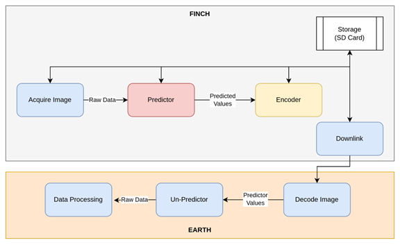
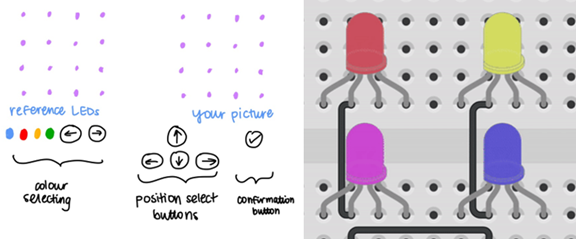

About
Hi, I'm Brian Tsoi.
I am a computer engineering student at the University of Toronto. I am also pursuing a minor in AI and a certificate in Engineering Business. Additionally, I'm currently taking the online course Full Stack Open to learn web development. You can find my resume here.
I have a passion for learning and I enjoy solving real-world problems by writing elegant code and building powerful software. I am interested in embedded systems, operating systems, cloud computing, web development and much more.
I use VSCode (with Vim keybindings! I am obsessed with them!) and my favourite language is C. I am also obsessed with Doom Emacs (Org mode is amazing).
Some of my hobbies include reading, watching movies (favourite is Blade Runner 2049), playing board games (favourite is Love Letter), and having an existential crisis every now and then.
Experience
Firmware Developer @ University of Toronto Aerospace Team Space Systems
UTAT Space Systems is a student team that builds and launches CubeSats for scientific missions. As a member of the firmware team, I contributed to the FINCH mission, designed to conduct a technological demonstration of crop residue mapping from the Low-Earth Orbit that set to be launched in 2025.
I developed an adaptive Python compression algorithm based on Golomb-Rice coding, in accordance with the Consultative Committee for Space Data Systems standards. The algorithm achieved a compression ratio of 1.5:1 and is currently being translated to C such that it can be run on the STM32 microcontrollers on the CubeSat.
We are also using the STM32 Hardware Abstraction Layer and FreeRTOS to prototype finite state machines and a flight software framework for the CubeSat.
Software Developer @ Spark Design Club
The Spark Design Club builds interactive displays that are displayed all around UofT campus. The project I took part in is called Hack It, a collection of LED minigames inspired by the toy Bop It. Using the Arduino Uno, I worked with 3 other subteam members to build the circuit and logic for the game Copy-It, where the players use joystick and buttons to recreate patterns on an LED grid.
Projects
Terminal Text Editor
Did I mention that I'm obsessed with Vim? I implemented a simple terminal text editor with the use of the C standard library, POSIX API and VT100 terminal sequences. I am currently developing modal editing features similar to that of vim
AI Raytracing Image Denoising Filter
Raytracing is a common technique in 3D graphics rendering. The quality of ratracing images depends on the number of samples used in the rendering process. A low sampling rate leads to a noisy image, but a high sampling rate is computationally intensive, thus causing a dilemma.
I worked with 3 other members to collect sufficient data with open source 3D models and build a Pytorch Autoencoder neural network that aims to denoise poorly rendered 3D images to bypass the demand for resources in image rendering. We achieved a dnoising filter that removes noises by 83%, beating conventional noise filters such as non-local means filter by 47%.
Map Application
Working with 2 other team members, we created a data parsing API that reads OpenStreetMap data using C++ and the STL library. We employed different data structures in the STL library to facilitate efficient data retrieval and crafted a map GUI using the GTK library, enabling users to drag, zoom and search for map locations. In addition, we utilized A* path finding algorithm to provide features that assist users with travelling directions.
Smart Glasses
During the MakeUofT Hackathon, two other friends and I prototyped a smart glasses design that will encourage optimal reading conditions. Controlled by an Arduino Uno, the circuit incorporates photoresistors, ultrasonic sensors and buzzer to notify wearer when their eyes are too close to the screen/book. On top of that, we added a web user interface using HTML, CSS and Javascript.
Minigame: Untangle
Running on a Quartus FPGA, Untangle is built in plain C. The player has to untangle a mess of lines connected to nodes displayed on a VGA monitor. The program interfaces with a PS/2 mouse, allowing the player to untangle and straighten the lines so that none of them overlap
Minigame: Conway's Game of Life
Using vanilla HTML, CSS and Javascript, I created an interactive webpage that demonstrates Conway's Game of Life
Minigame: Pong
With the pygame library (and very limited programming skills, I was grade 11 back then self learning python), I recreated the classic Pong game with a computer component.
Skills
Programming: C, C++, Python, HTML, CSS and Javascript, ARM Assembly
Hardware/Embedded: Arduino, STM32 microcontrollers, UART, I2C, SPI, RTOS, FPGAs (Verilog)
Tools and Platforms: Linux dev tools (gcc, make, gdb, valgrind), Git, Github
Languages: Chinese (native in Cantonese, fluent in Mandarin), English (fluent)